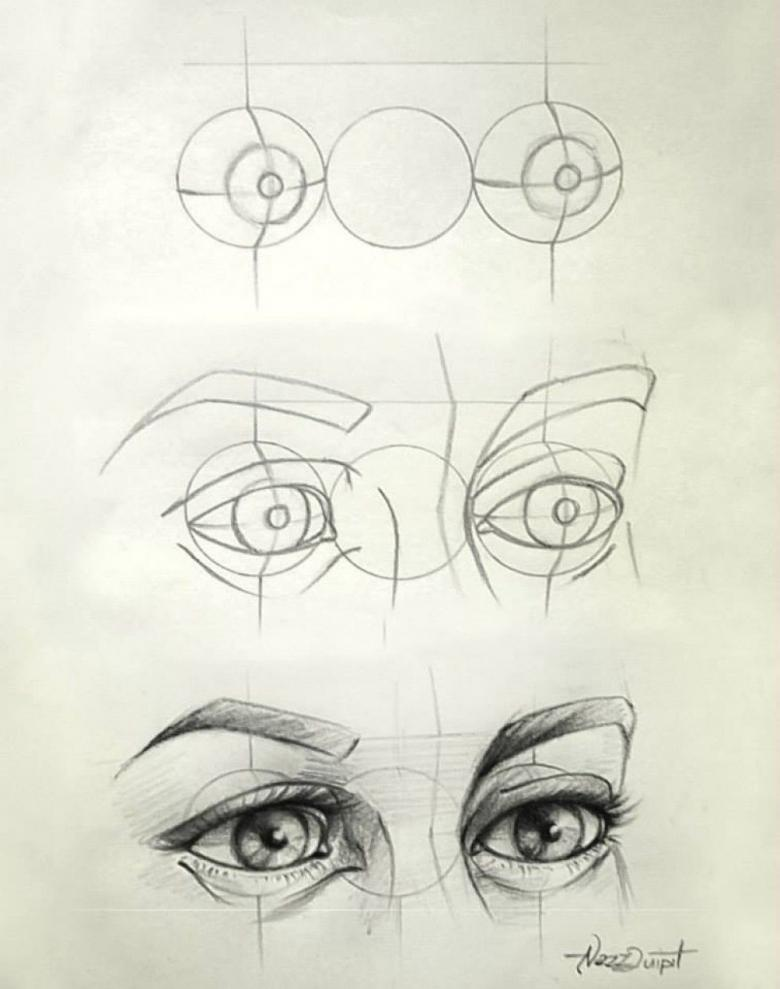
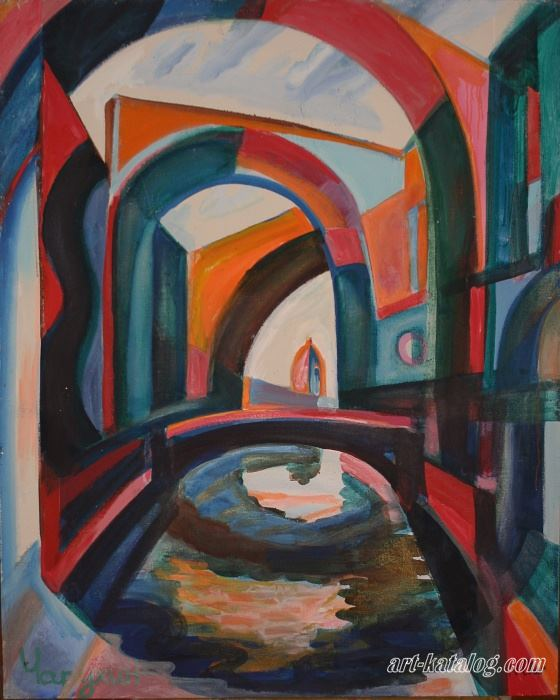
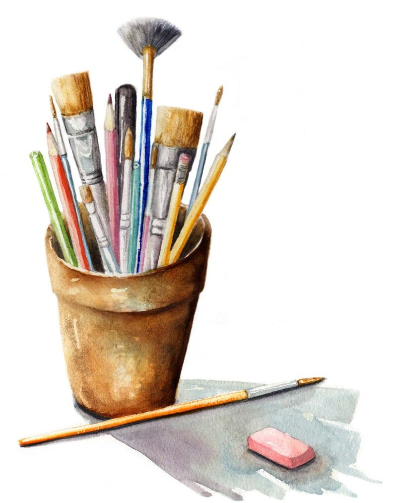
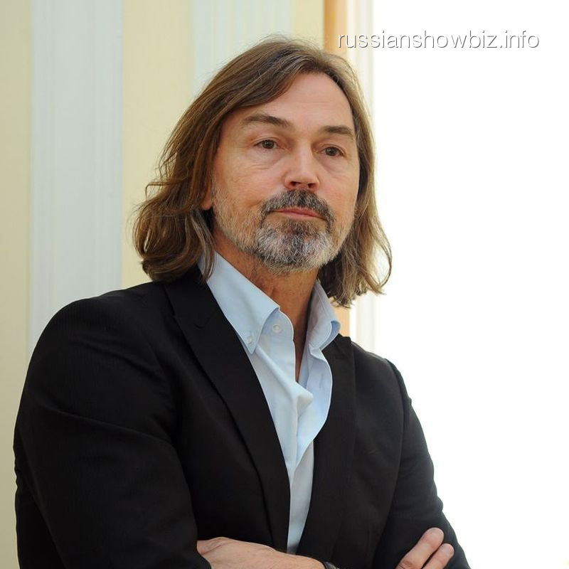
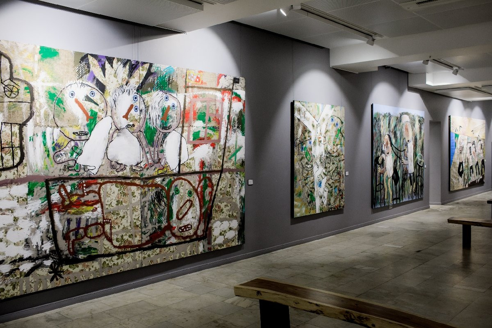

Как научиться рисовать

Наверняка у каждого человека бывали моменты, когда о чем-то задумаешься, а рука требует карандаш или ручку и стремится что -то изобразить, начеркать...А потом смотришь на свои каракули и думаешь, ну как так у одних получается красиво, картинки оживают, а у других так, как у меня..Не ругайте себя, надо поставить цель и научиться рисовать. В этом тебе поможет мой сайт.
Стили и направления живописи

Стиль достаточно широкое понятие. Это то, что подчеркивает индивидуальность. Принято выделять стиль жизни, работы, одежды, искусства и творчества. Если говорить об этом понятии в отношении художников, имеется большое разнообразие стилей. Зачастую происходит смешение направлений и стилей, что делает творчество авторов более ярким, особенным, порой противоречивым. Предлагаю ознакомимся с направлениями и стилями живописи.
Материалы для рисования

Свои зарисовки ты можете создавать с помощью различных материалов. Это и карандаши и краски различных видов. Кому-то нравится рисовать на клочке бумаги, кому-то на специальных листах для рисования, кому-то на холсте
Современые художники

Вы замечали, что творчество одних художников близко по духу, вам нравится каждый мазок, ваше воображение рисует продолжение того "стоп-кадра", изображенного на картине? А то, как пишут другие -, претит вашему внутреннему миру? Да, у нас во всём есть кумиры. Любой начинающий художник должен знать своих "героев" в лицо. Предлагаю вам ознакомиться с современными художниками ХХ века.
На этой страничке я собрал наиболее известных и достойных из них.
Современые художественые выставки

Во все времена деятелям искусства было престижно выставлять свое творчество на обозрение народа. Так стали появляться первые выставки, где обсуждались картины, где ими восторгались, иногда подвергали критике. В наши дни существуют известные музеи с постоянными экспозициями: Эрмитаж, Русский художественный музей, Третьяковская галерея, Лувр, где представлены картины именитых художников. Но так же есть временные выставки и выставки современного искусства, на которых и хотелось бы остановиться.